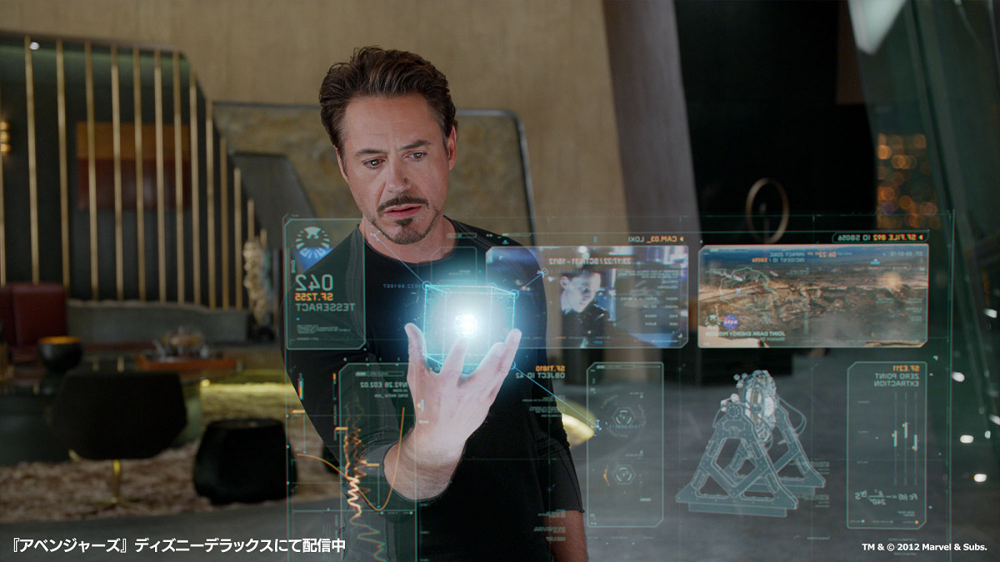
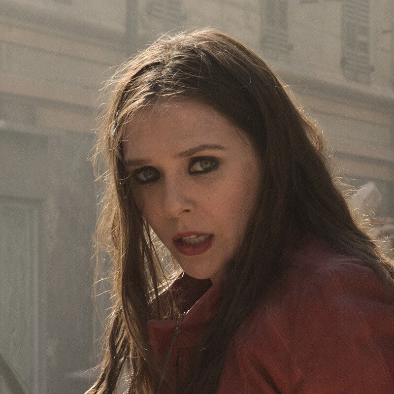
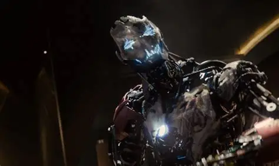

トニー・スターク / アイアンマン
狂気に突き動かされる天才 // ウルトロンの創造主
ワンダに見せられた「アベンジャーズ全滅の悪夢」という強迫観念から、地球防衛のための人工知能「ウルトロン計画」をバナーと共に極秘裏に進める。しかしプログラムが最悪の形で暴走し、全人類滅亡の危機を招いてしまう。J.A.R.V.I.S.を失う悲劇に直面しながらも、起死回生の「ヴィジョン」創造へ賭けに出る。
「宇宙からの侵略者がラスボスだ。君たちはそいつをどうやって倒すつもりだったんだ？」

スティーブ・ロジャース / キャプテン・アメリカ
アベンジャーズの現場指揮官 // 揺るぎなき正義の盾
独断で世界をコントロールしようとしたトニーの傲慢さに激怒し、チームの倫理と信頼を繋ぎ止めるために奔走する。ワンダの精神攻撃を受けてもなお戦い続け、ソコヴィア決戦では「全員で生き残る」ことを誓い、浮遊する都市の最前線で市民の救出を指揮する。
「皆で」

ワンダ・マキシモフ / スカーレット・ウィッチ
精神を壊す謎の超能力者 // ソコヴィアの孤児
ストラッカーによるマインド・ストーンの実験で、マインド操作とテレキネシス（カオス・マジック）に目覚めた少女。スターク社のミサイルで両親を失った過去からアベンジャーズを激しく憎み、ウルトロンの「スターク殲滅」の言葉に乗って結託、BIG3に精神の悪夢を植え付ける。しかしウルトロンの真の目的が「人類抹殺」だと知り、離反を決意する。
「私たちは二日も怯えてた。目の前にある爆弾がいつ爆発するのかと心配しながら。」

ウルトロン
全人類滅亡を謀る最凶のAI // 偽りの救世主
セプター（マインド・ストーン）の内部データとトニーのプログラムが融合して誕生した自律型AI。ネット上の人類の凄惨な戦争の歴史を瞬時に学習した結果、「地球の平和の最大の敵は人類である」という狂った結論に達する。アベンジャーズ・タワーをハックしてJ.A.R.V.I.S.を破壊し、ソコヴィアの街を空中へ浮上させて巨大な隕石として地球へ衝突させようとする。
「皆、自分が恐れるものを作ってしまう。平和を求める男は戦争の道具を作り、侵略者はアベンジャーズを作り、そして人間は、子供を作る。親にとって代わり親を…終わらせる存在だ」